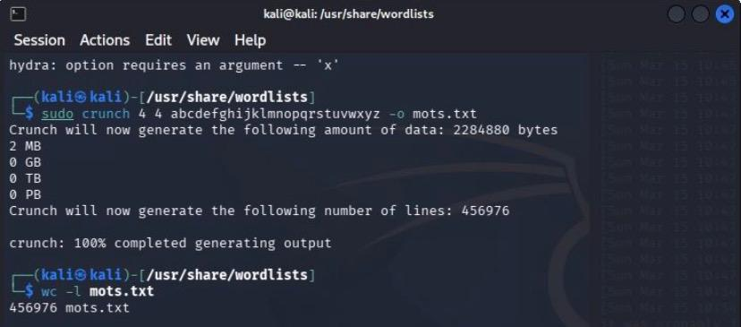
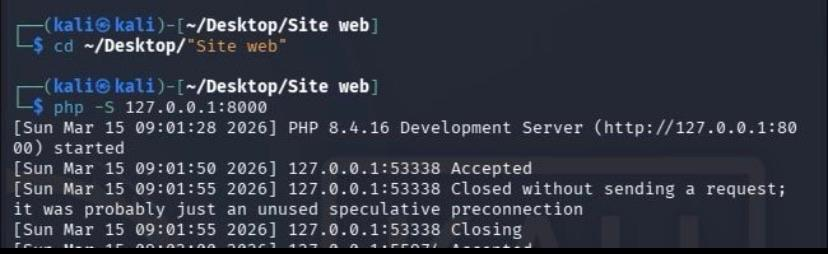
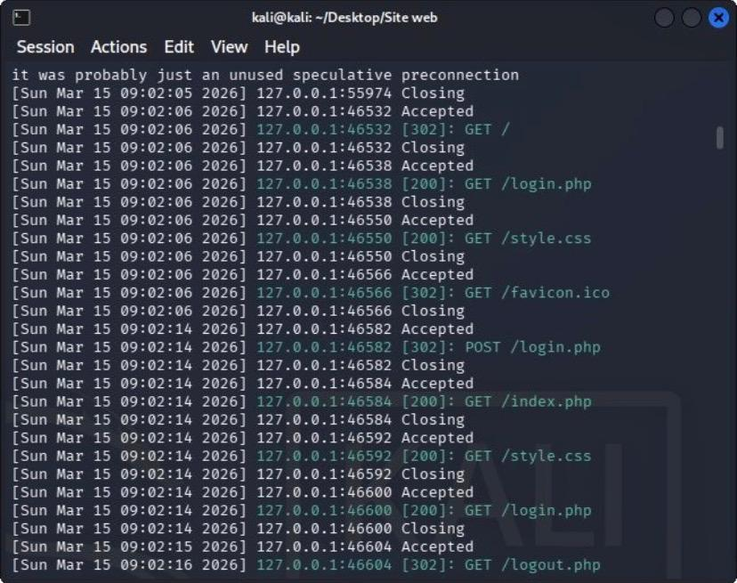
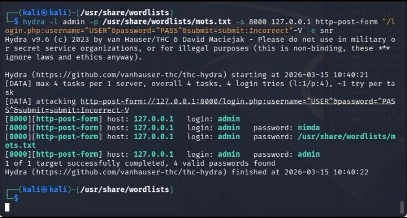

Disponible en septembre 2026
Al Hassane Fofana
Alternance en Cybersécurité, Réseaux informatiques & Administration Linux
Étudiant en cycle ingénieur en sécurité numérique à l’ESAIP à Angers, avec un intérêt marqué pour les réseaux, l’administration système Linux et le support informatique.
Localisation
Angers, France
Présentation
À propos
Je construis mon parcours autour de la cybersécurité, des réseaux informatiques et de l’administration Linux. Mon objectif est d’intégrer une alternance où je pourrai développer mes compétences techniques, contribuer à des projets concrets et évoluer dans un environnement exigeant et stimulant.
Points forts
- Travail d’équipe
- Organisation
- Créativité
- Autonomie
- Communication orale et écrite
- Esprit d’analyse
Expertise
Compétences techniques
Programmation
Systèmes d’exploitation
Réseaux
Outils
Réalisations
Projets
Projet cybersécurité
Analyse d’un formulaire d’authentification web face aux mots de passe faibles
Mini projet personnel réalisé dans un environnement local contrôlé pour analyser le fonctionnement d’une attaque par dictionnaire sur un système de connexion web.
L’objectif était de reproduire un scénario de test afin d’observer comment des identifiants faibles peuvent être compromis lorsque des protections adaptées ne sont pas mises en place.
- Création d’un environnement de test local avec une page d’authentification web.
- Observation du comportement du serveur PHP local pendant les requêtes et connexions.
- Simulation de tentatives automatisées avec Hydra sur un formulaire d’authentification local.
- Mise en évidence de l’importance des mots de passe robustes, de la limitation des tentatives et du MFA.




Parcours
Expériences
2024 – 2025
Projet Réseau – Configuration VLAN
Projet académique – ESAIP, Fès – Maroc
- Conception d’une architecture réseau segmentée.
- Configuration de VLAN et mise en place du routage inter-VLAN.
- Analyse du fonctionnement et des performances du réseau.
2023 – 2024
Stagiaire Réseaux & Support Informatique
Foundara, Côte d’Ivoire
- Participation à la configuration de réseaux informatiques simples.
- Installation et maintenance de logiciels et d’équipements informatiques.
- Assistance à la résolution de problèmes techniques utilisateurs.
- Vérification du bon fonctionnement des postes et du réseau local.
2023 – 2024
Stagiaire Support Informatique
Foundara, Côte d’Ivoire
- Assistance dans l’installation et la configuration de postes informatiques.
- Participation à la gestion et à l’organisation de données numériques.
- Découverte du fonctionnement des systèmes informatiques en entreprise.
- Support technique de base aux utilisateurs.
Études
Formation
ESAIP – École d’ingénieurs, Angers
Cycle ingénieur – Sécurité numérique
Université Euromed de Fès, Maroc
Classe préparatoire – Ingénierie digitale & Intelligence artificielle
Université Internationale de Cocody – Côte d’Ivoire
BTS Finance, Comptabilité et Gestion des entreprises
Baccalauréat scientifique – Série D
Yopougon, Côte d’Ivoire
Communication
Langues
FrançaisLangue maternelle
AnglaisNiveau intermédiaire
EspagnolNiveau débutant
Personnel
Centres d’intérêt
Contact
Construisons quelque chose de solide ensemble.
Je recherche une alternance en cybersécurité, réseaux informatiques ou administration Linux à partir de septembre 2026.